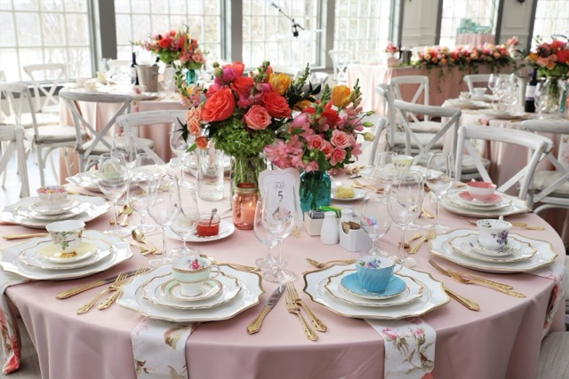

Décor
What’s a tea party with no decoration? I suppose you could have one with mugs and plates, but that’s bare bones. Get some cute napkins, bring out the fine China and silverware, and use this as an opportunity to get creative and crafty! If you’re worried about sustainable use what’s on hand or thrift. Lots of thrift stores carry old tea sets and tablecloths
Decoration Ideas
- A nice tea set
- On theme food trays, tiered stand and glasses
- Name cards for your guests
- Cute palce mats
- Delicate doilies
- A nice tablecloths and runner
- Bows/ribbon for chairs, napkins,to hang etc.
- Cute napkins, cloth or paper
- Floral arragements, fake or real
- Ambient lighting such as string light or tea candles
- Banners, garland, streamers or other hanging decorations
- Balloons
Where to get Decorations and Supplies
- Michaels
- Hobby Lobby
- Goodwill, Salvation Army, your local thrift!
- TJ Maxx, Marshalls, HomeGoods
- Walmart
Or you can DIY decorations too! In the era of the internet, you can get lots of tutorials, tips and pointers on having a super cute tea party.

Décor Inspiration Board
A Pinterest board to bring out your inner-designer
Décor Pinterest Board